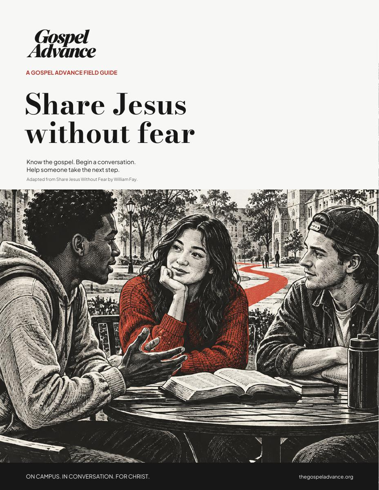

On campus
On campusResources.
Know the truth. Live it. Share it.
For a more hopeful
generation.
Flagship resource
How to share
the gospel.
A practical, Scripture-rooted guide to starting conversations, sharing Jesus, and helping someone take the next step.
- Know the gospel
- Start the conversation
- Help them take the next step
7-page illustrated field guide.

Free biblical training
Gospel Advance
Academy.
Know the Word.
Live your faith.
Make disciples.
01 / Study Scripture
02 / Grow in faith
Bible 101
Study Scripture with confidence.
Growing in Grace
A foundation for a lifetime of faith.
- Scripture-rooted.
- Self-paced.
- Always free.

Sermons
Rooted in the Word.
Biblical truth for everyday life.

Sermon
The Fixation & The Invitation
John 4:1-29

Sermon
He Must Increase, I Must Decrease
John 3:27-36

Sermon
Why Did Jesus Have to Die?
John 3:14-21

Sermon
How to Get to Heaven According to Jesus
John 3:1-16

Sermon
Jesus vs. Religious Corruption
John 2:13-25

Sermon
The Battle For Your Mind
Biblical teaching

Sermon
Water into Wine
John 2:1-12

Sermon
True Biblical Belief
John 1:35-51
01 / 08